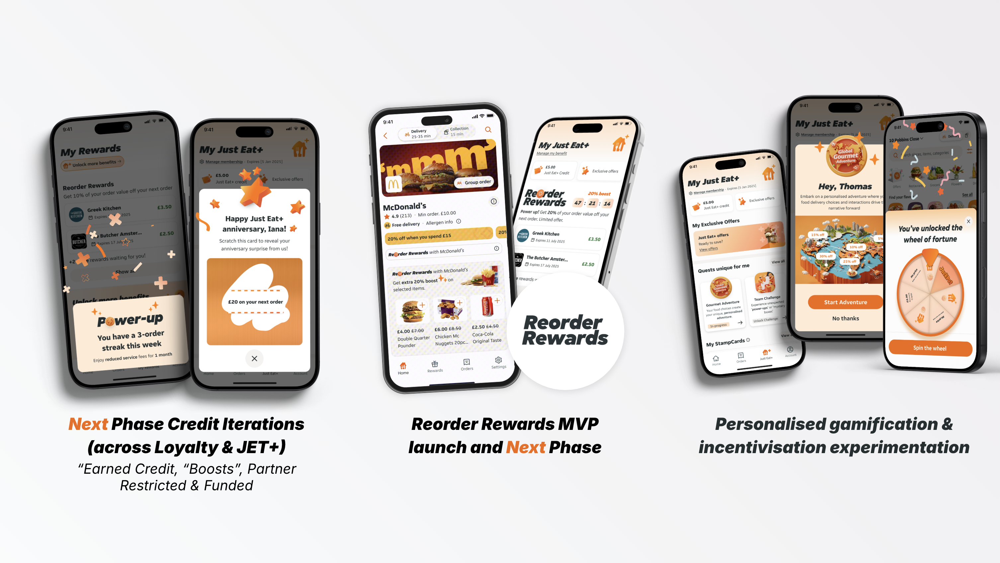
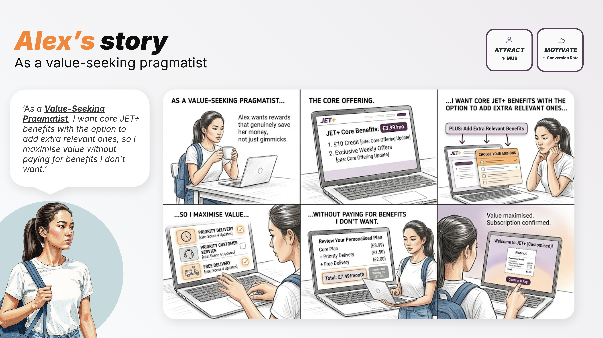

JET+ Loyalty
Transforming transactional behaviour into loyal memberships — shifting users from treating Just Eat as an occasional treat to a daily habit, across web, iOS and Android.
Just Eat had a retention problem: users came for the treat, not the habit.
Engagement was sporadic. People saw the platform as a transactional utility, order frequency was inconsistent, and the cost of re-acquiring lapsed users kept rising. The business needed a structural intervention — not another marketing campaign — to shift mindset and build sustainable, subscription-backed revenue.
We were also playing catch-up. With competitors, paid members were spending 24× more and ordering 10–30% more than non-members, and 13% of our lapsed customers had left specifically for a rival’s paid programme.
“Consumers primarily switched to competitors because they offered more compelling deals and superior reward programmes.”
Reframe the relationship — from transactional to membership.
The goal was twofold: retain existing customers by giving them a tangible reason to stay, and acquire high-value new ones through a compelling, low-friction entry point. The design challenge was to make membership value feel immediate, not deferred — so users felt the benefit before they had time to second-guess the decision. Three principles anchored every screen:
My job was to hold the vision — and the cross-functional machine — together.
As design lead I orchestrated strategy across multiple loyalty initiatives and managed a team of designers, acting as the bridge between Product, Engineering and Analytics across compressed timelines.

A lightweight, 90-day pass — not another subscription trap.
Research into subscription fatigue pushed us away from a standard recurring model toward a flexible, one-time-payment 90-day pass. The tiered design made the initial entry feel risk-free, while the bundle rewarded commitment with significant savings — without the perceived “lock-in” of a long-term subscription.
By offering it as a free-trial upsell directly in the checkout flow, we captured users at the peak of engagement — already in a spending mindset. It validated a clear truth: a low-friction, time-bound offer converts far better than a traditional subscription. I architected it as one unified experience across web and native, eliminating fragmentation so the brand journey felt cohesive at every touchpoint.
Free delivery for Prime members — across three markets.
I spearheaded the design and cross-platform integration of the Amazon Prime × Just Eat Takeaway partnership, bringing free delivery to Prime members in Germany, Austria and Spain. I was the primary design bridge between senior leadership and global stakeholders at Amazon — ensuring brand alignment and a frictionless experience across two ecosystems, and delivering complex multi-state UI under condensed global deadlines.
The mechanics were grounded in behavioural economics.
Membership value isn’t just a number — it’s how it’s framed. We embedded a handful of psychological principles into the information architecture, copy and interaction design to systematically reduce drop-off:
Perfect UX, balanced against real constraints.
I also partnered with the design systems and studio teams to give JET+ its own visual language inside the core JET PIE library — a premium identity built on dynamic orange gradients and 3D-rendered iconography, created under my creative direction.
A well-designed entry point, shifting behaviour at scale.
Across all one-time-payment mechanisms, the work proved that leading with instant value — and removing friction — converts transactional users into loyal members. The numbers are live, cross-platform, and still informing iteration.
From a live foundation to a personalised, AI-powered north star.
The live product is the foundation. The next phase deepens personalisation, reinforces habit, and maximises ROI through intelligent segmentation — built on four behavioural archetypes from our research, and shaped by ongoing experimentation. (Early tests already showed a £10 credit driving 3.83% redemption vs. 1.49% for free delivery, at a lower cost per outcome.)


“Become the most rewarding platform — the right reward, to the right customer, at the right time.”